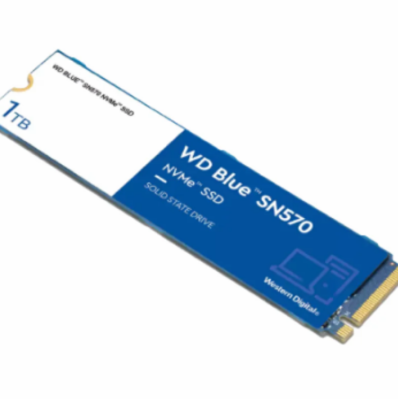
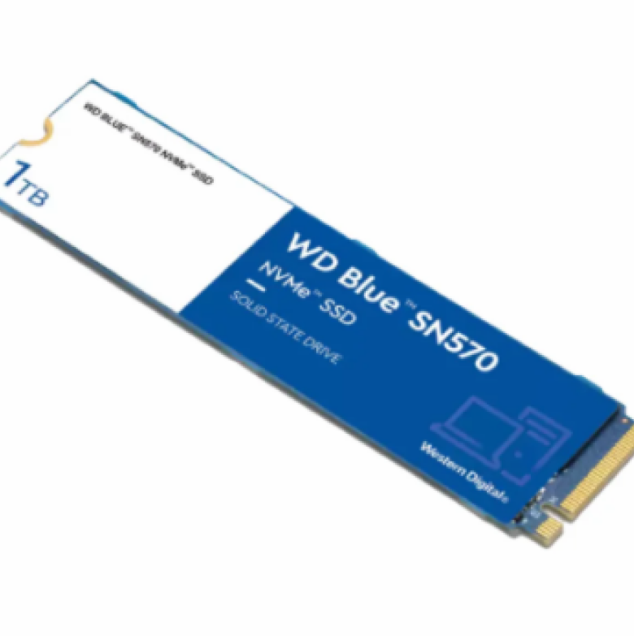

The Wiki of Computer Parts!
 

SDD Storage
SSD (Solid-State Drive) storage is a fast, modern type of storage that uses flash memory to store data. Unlike HDDs, SSDs have no moving parts, which makes them faster, more durable, and quieter. SSDs provide quick boot times, faster file access, and improved system performance, making them ideal for tasks like gaming, video editing, and running applications. However, they can be more expensive than HDDs for the same storage capacity.
How does SDD storage work?
SSD storage stores data on flash memory chips, providing faster read and write speeds compared to traditional HDDs. It allows for quick access to files, faster boot times, and improved overall system performance. Since SSDs have no moving parts, they are more durable and less prone to mechanical failure, making them ideal for high-performance computing tasks.
What is the price range?
- 1. Entry-level SSDs: $20 to $50 (suitable for basic tasks and light storage needs, typically offering 120GB to 256GB of capacity).
- 2. Mid-range SSDs: $50 to $150 (ideal for everyday use, gaming, and productivity, with capacities ranging from 500GB to 1TB and faster performance).
- 3. High-end SSDs: $150 to $300 (designed for enthusiasts and professionals, offering 1TB to 2TB capacities, faster NVMe technology, and enhanced durability).
- 4. Premium SSDs: $300 and above (top-tier options with extreme speeds, large capacities (2TB+), and cutting-edge features for demanding workloads like video editing or high-performance computing).
*These prices can fluctuate based on brand, specifications, and market demand.